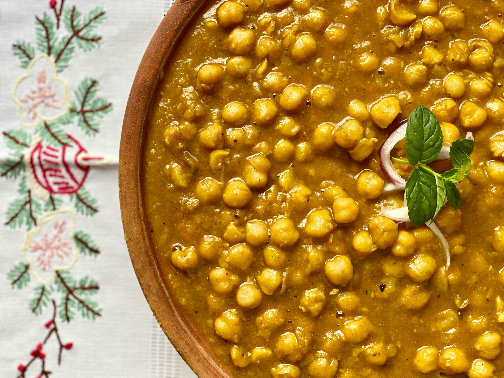

Chickpea Curry

Description
Chickpea curry is a hearty, flavorful dish made with tender chickpeas simmered in a rich, spiced sauce. The base typically includes onions, garlic, ginger, and tomatoes, cooked with warming spices like cumin, coriander, turmeric, and garam masala. Many versions add coconut milk for creaminess, giving the curry a smooth texture and slightly sweet balance to the spices.
It’s a comforting, protein-packed vegetarian dish that’s both nutritious and satisfying. Chickpea curry is commonly served with steamed rice, naan, or roti, and can be adjusted to be mild or spicy depending on preference.
It’s popular in Indian cuisine (often called chana masala) but has many variations around the world.
Ingredients
- 2 cans (15 oz each) chickpeas, drained and rinsed
- 1 medium onion, finely chopped
- 2–3 cloves garlic, minced
- 1 tbsp fresh ginger, grated
- 1 can (14–15 oz) diced or crushed tomatoes
- 1–2 tbsp oil (vegetable or olive oil)
- 1 tsp ground cumin
- 1 tsp ground coriander
- ½ tsp turmeric
- 1 tsp garam masala
- ½–1 tsp chili powder (adjust to taste)
- Salt to taste
- ½–1 cup coconut milk
- Fresh cilantro
- Lemon juice
Follow the below steps to prepare 'Mazedar' Indian Chickpea Curry!!
- Heat 1–2 tbsp oil in a large pan over medium heat.
- Add chopped onion and cook 4–5 minutes until soft and golden.
- Add garlic and ginger. Cook for 30 seconds until fragrant.
- Stir in cumin, coriander, turmeric, chili powder, and salt.
- Cook for about 30 seconds to toast the spices (this enhances flavor).
- Pour in the diced or crushed tomatoes.
- Cook 5–8 minutes, stirring occasionally, until the mixture thickens and the oil slightly separates from the sauce.
- Stir in the drained chickpeas.
- Add ½–1 cup water (or coconut milk for a creamier curry).
- Mix well.
- Cover and simmer for 10–15 minutes on low heat.
- Stir occasionally until the sauce thickens and flavors combine.
- Stir in garam masala and a squeeze of lemon juice.
- Garnish with fresh cilantro.
- Serve hot with rice, naan, or roti.
Home